Salmon: flow and world
all the picture form Pinterest
Fertilized fish eggs hatch → Freshwater rearing → Transferred to seawater net cages → Feeding and farming → Harvesting → Processing (removing internal organs, slicing, deboning)
→ Packaging and refrigeration/freezing → Cold chain transportation → Wholesale and retail → Purchase and storage → Preparation or cooking → Serving for consumption
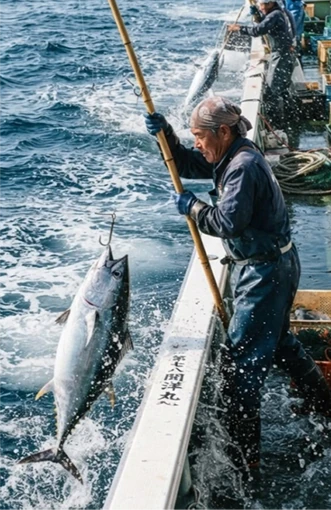
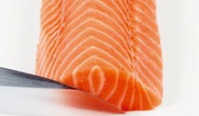
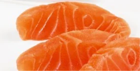
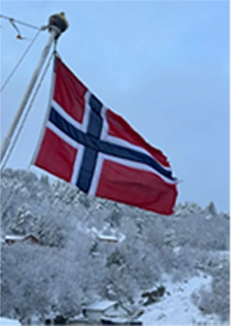
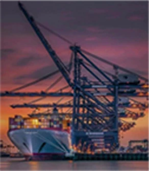
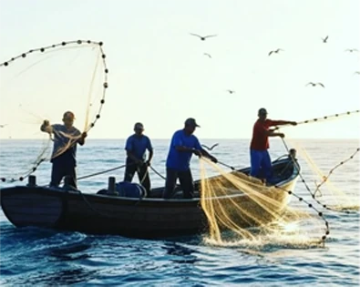
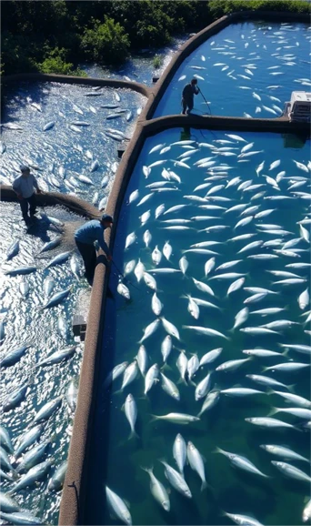
Where from
Cost?
Fishing
Overfishing, ecological damage, disruption of the food chain
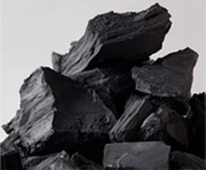
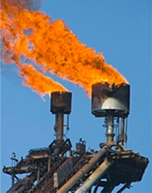
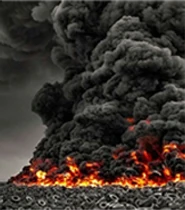
transportation
where to go
？
Cost?
Environmental pollution,
energy consumption
过度开采
refrigerated shipment
Transportation fuel consumption, electricity consumption, etc.
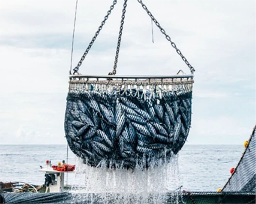
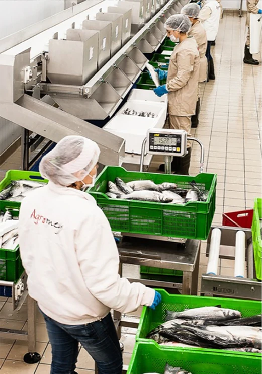
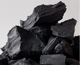
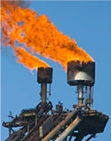
Factory processing
Environmental pollution,
energy consumption
exhaustive exploitation
Factory operation - Energy consumption
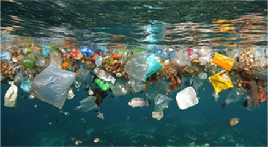
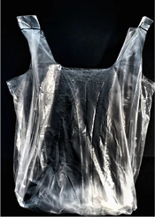
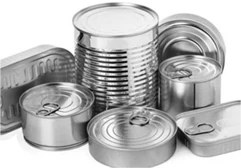
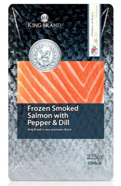
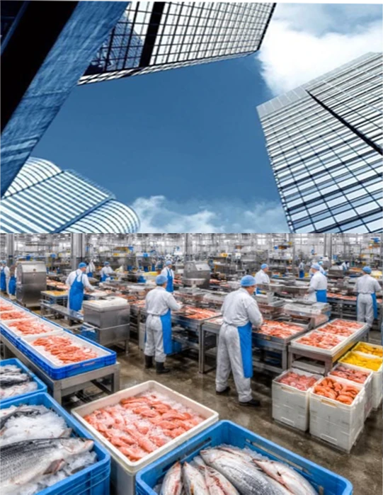
Packaging, processing
Cost?
package
Garbage pollution, seawater pollution
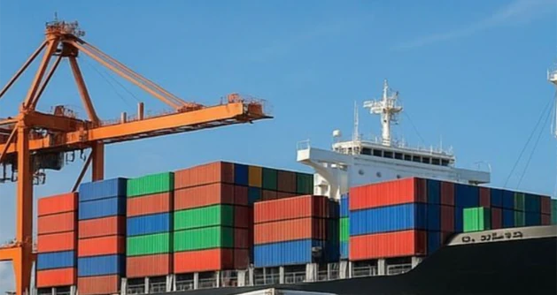
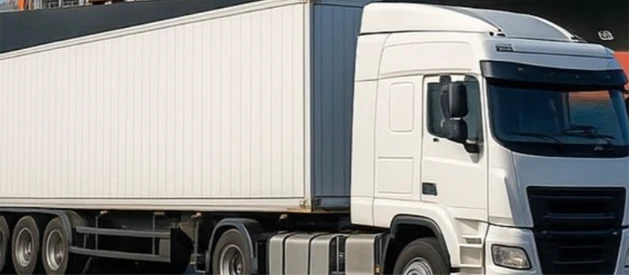
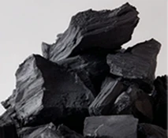
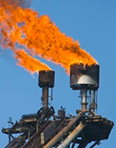
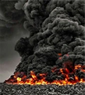
Second or multiple shipments
Environmental pollution,
energy consumption
exhaustive exploitation
Transportation fuel consumption,
electricity consumption, etc.
refrigerated shipment
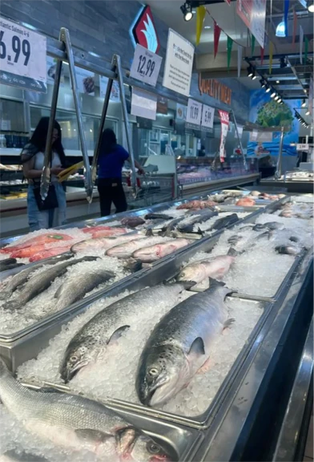
Sales and market placement
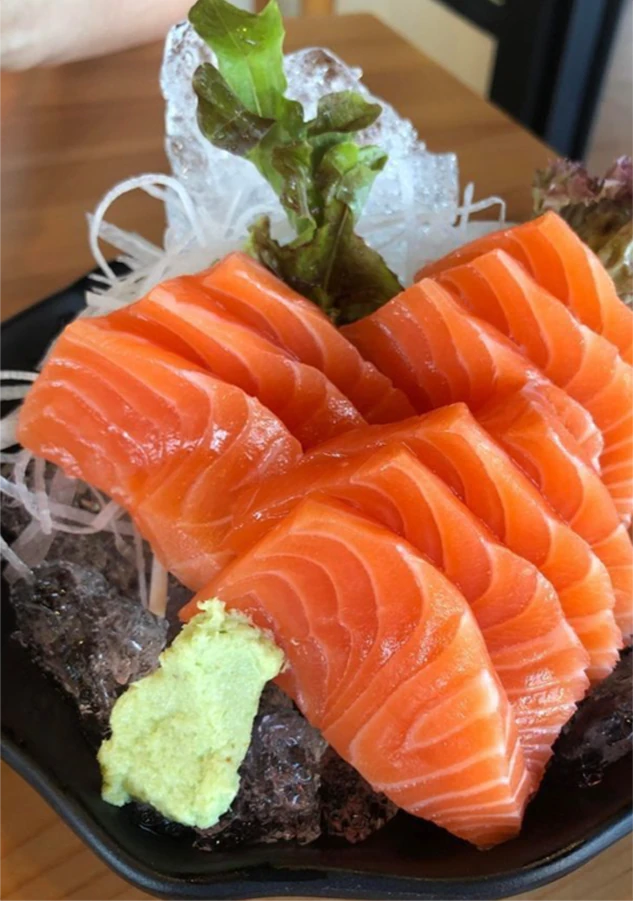
FINAL
food wastage
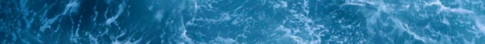
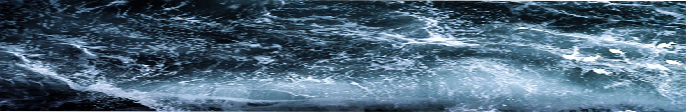
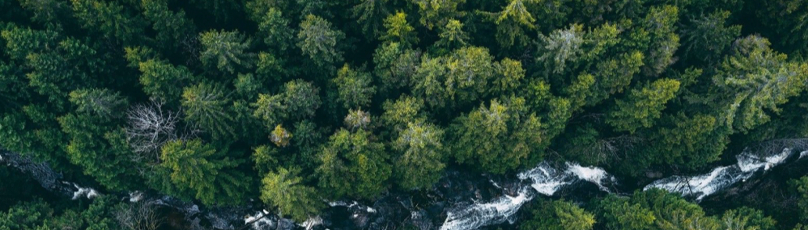
The pollution of seawater and the destruction of the ecosystem
have a negative impact on the output and quality of raw materials.
Output has decreased, quality has declined, and costs have risen.
Ecosystem
Ecosystem destruction
Impact on human life.
Loading images…